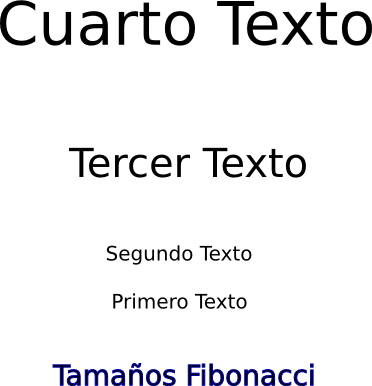
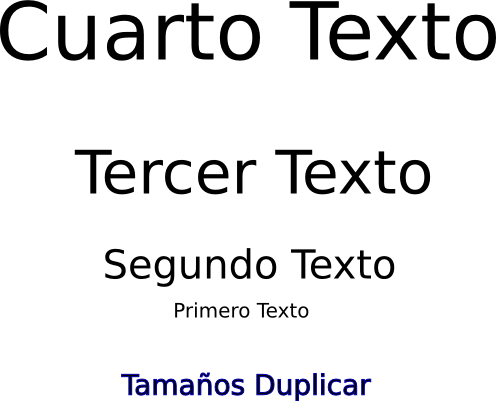

Uso de las Proporciones y Espacio
Una de las cosas más
importantes que hay que tomar en cuenta cuando se crean gráficos es si
las proporciones entre los varios componentes de tu gráfico son las
correctas.
El aspecto más importante de una proporción es cuando se está
trabajando con un gráfico que muestra una imagen de una escena
tri-dimencional (como el ejemplo del campamento que usamos en la
sección anterior). Cuando creamos una escena 3-D en dos
dimensiones (en la pantalla de la computadora o en una hoja de papel),
como artista necesitas asegurarte de que las proporciones correctas se
están usando para representar la escena correctamente. El no
recrear una escena correctamente causará que quien vea la imagen sienta
que hay algo que no está bien, muchas veces sin poder identificar
exactamente cuál es el problema. Esto lo llevará a no disfrutar
del trabajo realizado. La mejor manera de pensar sobre la
proporción de trabajos en 3-D es entendiendo que las cosas se ven más
grandes cuando están más cerca. Cuando estés diseñando una escena
en Inkscape, va a ser fácil cambiar el tamaño de los objetos con los
que estarás trabajando. Usa esta abilidad para aumentar el tamaño
de objetos cercanos y reducir el tamaño de objetos distantes, para que
se vean de forma natural.
Si miras con detenimiento el ejemplo del campamento que usamos
arriba, notrás que los arboles son más pequeños a distancia y más
grandes de cerca. Esto se hizo usando la misma imagen de un
árbol, y simplemente cambiando el tamaño para que coordinara con la
distanceia deseada.
Intentemos ese mismo ejemplo ahora. Abajo está el archivo
original, con sólo el trasfondo y ejemplos de árboles. Copia y
pega los árboles en el trasfondo y cambia su tamaño para que
corresponda con la proporción correcta. Comienza en la parte
posterior con los árboles más pequeños, luego continua hacia al frente
(hacia el primer plano), con árboles más y más grande. No olvides
dejar un área sin árboles donde irá nuestro campamento.
Background-Empty.svg

La proporción también se usa fuera de escenas 3-D. Cuando
simplemente tienes texto y gráficos, necesitas ser consciente de el
tamaño relativo entre los differentes objetos en el gráfico.
Además, la cantidad (y posición) del espacio abierto es muy importante.
La regla más común usada para determinar el tamaño relativo de
objetos y espacio se conoce como la Regla Dorada o la Secuencia
Fibonacci. Esta fue desarrollada por un matemático de Piza,
Italia, llamado fibonacci. Su secuencia occurre simplemente
cuando cada próximo número en la secuencia es la suma de los dos
números anteriores. Comenzado con 0:1, la secuencia comienza con
0:1:1:2:3:5:8:13:21, etc. Con el paso de los años, muchos
científicos y artistas han encontrado que esta secuencia se encuentra
en todos lados en la naturaleza, desde corazas de caracol hasta hojas
de árboles. Además, el ojo humano se ha desarrollado a través de
miles de años para identificar este patrón fácilmente, de manera que
objetos que se presentan dentro de esa secuencia se ven bien puestos y
naturales.
En el ejemplo a la izquierda los tamaños de los textos y del
espacio entre ellos ambos se encuentran a razón 1:1:2:3. En este
caso el tamaño de texto es 20:20:40:60 (desde abajo hacia arriba), y
los espacios entre medio son 46:92:138. En el otro ejemplo, a la
derecha, al tamaño del texto simplemente se le añade 20 cada vez
(20:40:60:80). puedes darte cuenta de que el ejemplo de la
izquierda, que sigue la secuencia Fibonacci, perese seguir una
progresión más natural al extenderse, mientras que el ejemplo a la
dereca parece más abrupto.


Lo otro que podemos hacer con el espacio es usarlo para llamar la
atención de la audiencia en una dirección en particular.

¿Te
das cuenta de cómo todo el espacio vacío dentro de la caja tiende a
hacer que el ojo se mueva hacia el círculo rojo? Esto puede ser
aún más útil en imágenes más complejas que contengan muchos objetos
diferentes.